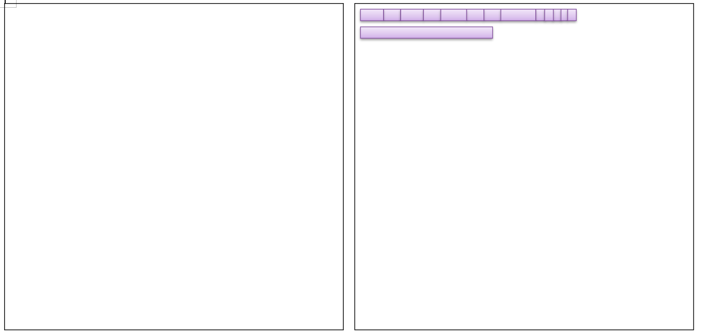

by Adam Tornhill
Technical debt is "a concept in programming that reflects the extra development work that arises when code that is easy to implement in the short run is used instead of applying the best overall solution".
Technical debt can be compared to monetary debt. If technical debt is not repaid, it can accumulate interest, making it harder to implement changes later on.
[from Wikipedia]Version Control System
Knows exaclty who did what change in what point of time
...how to use it to identify the code with the highest interest rate?


Tools by Adam Tornhill
- Code Maat: open source, text only (GPL) - github.com/adamtornhill/code-maat
- CodeScene: free for open source (commercial) - codescene.io
Temporal coupling analysis using Code Maat on Irdeto MediaManager

Hotspots analysis using Code Maat on Irdeto MediaManager
The author's website: adamtornhill.com
Thanks!
by
Martin Thomson
Aeron is designed to provide high-throughput and low-latency message transport from publishers to subscribers
- Java
- C#
- C++
Which is the fastest implementation? C#, C++, Java
Which was the fastest before any optimizations? Java, C#, C++
Time, Skills & Resources
Managed runtime is not always the best choise
Average time in ns/op to sum all longs in a 1GB array?
|
pattern of memory access | average time of individual addition |
|
sequentially: | ~1ns |
|
random walk per OS page: | ~3ns |
|
data dependent walk per OS page: | ~7ns |
|
random heap walk | ~19ns |
|
data dependant heap walk: | ~90ns |
|
numa access: | +40ns |
- Memory is transported in Cachelines
- Memory is managed in OS Pages
- Memory is pre-fetched on predictable access patterns
Profile guided optimizations

Garbage collection
- mark: identify the live objects in the memory heap (~live set)
- sweep: reclaim resources held by dead objects (~heap)
- compaction: periodically relocate live objects
Generational hypothesis: "most objects die young"
Compaction

Compaction

Compaction
- Defragments heap
- Moves objects to memory
- Remaps all affected references
- Frees contiguous memory regions
- Same OS pages, same cache lines
G1

|
G1 | Azul Zing C4 |
|
monolithic stop-the-world copying new gen | concurrent, compacting new gen |
|
mostly concurrent old gen marker | concurrent guaranteed-single-pass-marker |
|
stop-the-world mostly incremental compacting old gen | concurrent, compacting old gen |
|
fallback to full collection | non stop the world fallback |
|
Compact non-popular regions in short stop the world pauses | easier tuning |
object inlining, aggregation

|
Managed GC | Native |
|
GC Implementation | Malloc Implementation |
|
Card Marking | Fragmentation |
|
Background Overhead in CPU and Memory | Debugging Effort and Inter-thread costs |
- Avoiding cache misses
- Avoiding duplicate work
- Choice of Data Structures
- Choice of Algorithms
- API Design
- Overall Design
Security War Stories
by Alasdair Allan (@aallan)
Security War Stories
Internet security was and still is poor.
- Databases with no passwords
- Files which are openly accessible
- API keys and database passwords on Github
- Austrian hotel left database exposed without password.
- Credit card number of customers for all to see
- Ashley Madison data breach.
- Users whose details were leaked filed a $567 million lawsuit.
Problems of data breaches
- Privacy
- Confidentiality
- Ransom
- Money
Check your data!
Problems of IoT is different !!!
- Physical access.
- Destroy hardware.
- Error scenario needs to be rethinked.
- Feeding bad data to sensors
- PetNet smart feeder with centralized server
- Stopped working when server was not accessible
- Proof of Concept released: Nest thermostat hack
- Could be used for ransom

IoT devices can lend their computer power
- Mirai botnet, DDoS attack
- Searches for IoT devices with default passwords
- Mostly IP cameras involved
- Source code of Mirai is on github (build your own botnet)
- https://www.shodan.io/
The three big problems with IoT
- Security
- Refresh cycles
- Standards